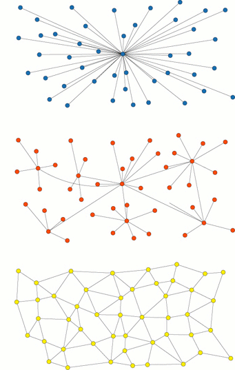

Analyse und Anwendung von IEEE 802.15.4 Netzwerken im Timeslotted Channel Hopping Mode.
PDF CodeImplementierung einer 5 stufigen Pipeline des 64-Bit RISCV Prozessors, mit Anbindung verschiedener Speichermodule über den Altera Avalon Bus, auf einem Altera Cyclon II FPGA in VHDL.
CodeAllgemein sind meine Implementierungen auf Github zu finden.
Github
